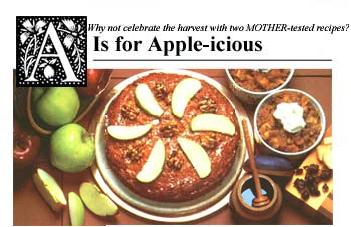

Autumn is here again, or almost, and with it ...apples! Crisp, juicy, and fragrant, this wonderful fruit lends itself to dishes without number. Here, for MOTHER's readers, are two creations adapted from Uprisings, The Whole Grain Bakers' Book (compiled after the Cooperative Whole Grain Education Association Conference of 1980). The book is available for $12.95, plus $1.50 for postage and handling, from Mother's Bookshelf (restricted) , 105 Stoney Mountain Rd., Hendersonville, NC 28791.
We baked and taste-tested both of these recipes, using MOTHER's art and editorial staffs as the eager guinea pigs. On the basis of our first results, we made a few small changes in one recipe but left the other intact.
• 5-6 cups of bread chunks (old bread is best)
• 1-1/2 cups of apple juice
• 1/3 cup of oil
• 1/3 cup of honey
• 1/3 cup of molasses (or maple syrup)
• 1/2 cup of chopped dates
• 1 teaspoon of vanilla
• 1 tablespoon of baking powder
• 1 teaspoon of cinnamon
Soak the bread with the apple juice in one bowl while, in another, you blend the oil, honey, molasses, and dates. Add the honey mixture to the bread, and stir everything well. Now dribble in the vanilla. Mix the baking powder and cinnamon together, then add them to the batter. Use two spoons to stir the mixture thoroughly: It should be fairly thick and lumpy. Pour the batter into an oiled 9" X 9" pan, and bake it at 350°F for 30 minutes, until it's firm but moist. Finally, spoon your confection into dessert cups and top it with whipped cream or whipped tofu.
Our test recipe was a great success, with comments ranging from "Great!" to a forlorn "I didn't get any!" Our pudin was made with molasses rather than maple syrup, and we used some leftover white bread. Obviously, the sweetener, as well as the type-and-age-of the bread you use will affect the flavor, moistness, and texture to some degree. We served our pudin without topping; in retrospect we feel this was a good decision, as the whole thing might otherwise have been devoured in large hunks, at once.
• 1/2 pound of butter, softened
• 1-1/2 cups plus
• 1 tablespoon of honey
• 5 eggs, beaten
• 3 tablespoons of vanilla
• 1 cup of yogurt (or buttermilk)
• 2-1/2 cups of unbleached flour
• 2 cups of whole wheat pastry flour
• 2 teaspoons of baking powder
• 2 teaspoons of baking soda
• 1 teaspoon of nutmeg
• 4 teaspoons of cinnamon
• 3/4 cup of chopped walnuts
• 3-1/2 cups of chopped apples, mixed types
Cream the butter and honey together until smooth. Add the beaten eggs, vanilla, and yogurt, and stir well. In a separate (large) bowl, combine the flours, baking powder, baking soda, and spices. Add the butter/honey mixture, the chopped walnuts and the apples, and stir everything together. Pour the batter into two greased 9" round pans, and bake at 350°F for about 45 minutes, until a knife inserted in the center comes out clean. Remove the pans from the oven, let the cakes cool, and serve portions with whipped cream.
Uprisings uses only whole wheat flour in its apple cake recipe and suggests garnishing the top with nuts. Although our test of this original version turned out well, most members of MOM's crew preferred the variation we present here. Every family has its own taste preferences, though, so we were pleased to see that this recipe lends itself to creative experimentation.
Incidentally, in our test of the original recipe, we used Granny Smith apples, which are crispy, juicy, and rather tart. To sweeten the cake without adding sugar, we baked another version, using a mixture of Granny Smith and Delicious apples-both Red Delicious and Golden-which proved very satisfactory.
Oh, and the comments? Well, how about an enthusiastic "Ummm, scrumptious!" and "This is really good!" Add to these remarks the fact that both the apple cake and the pudin de pan are easy to make, and you'll see why we feel these are two apple-icious winners.
|
 |
|
|